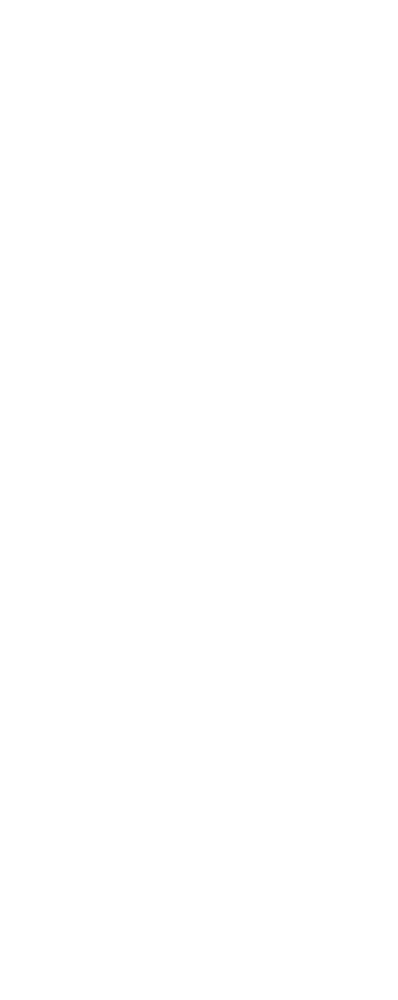
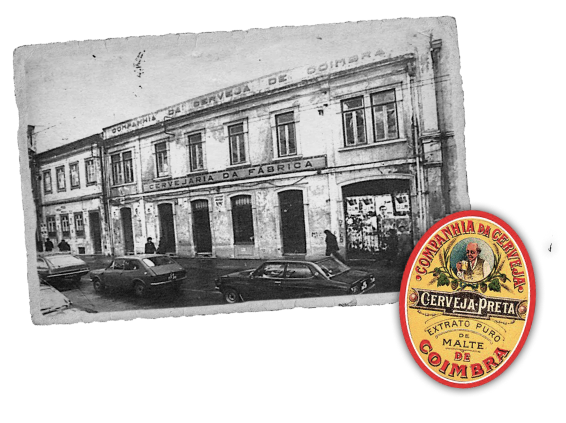
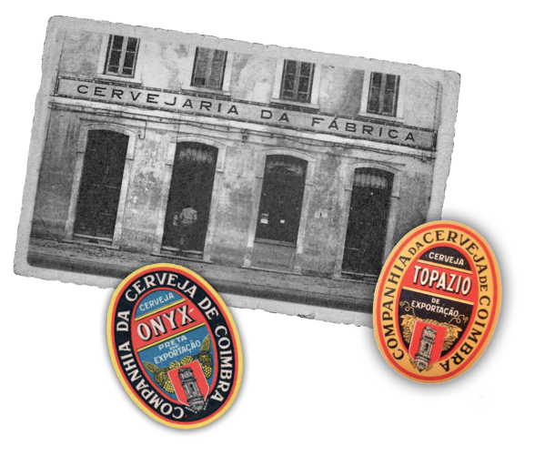

(De caráter artesanal), acerca do qual temos apenas informação dispersa, relativa a pequenos estabelecimentos, de produção reduzida.
Museu
Herança da cerveja de coimbra
O Museu, este misto de restaurante, “laboratório” cervejeiro e núcleo museológico assume-se como legítimo herdeiro do legado da famosa cerveja de Coimbra, com mais de século e meio de tradição, mas aproveitando dos mais avançados progressos tecnológicos e de fabrico, alcançados nos últimos dois séculos, resultantes da Revolução Industrial.

História
Século XIX

1924

Período já de cariz industrial, durante o qual a produção cervejeira foi assegurada pela Fábrica de Cerveja de Coimbra, instalada na Avenida Navarro, sensivelmente onde hoje se encontra localizada ma unidade hoteleira. A Fábrica também viria disponibilizar a venda direta ao público, na conhecida “Cervejaria da Fábrica”.
1934
Em termos empresariais, a Companhia Cerveja de Coimbra deixou de ser apenas local para se integrar na Sociedade Central de Cervejas, de âmbito nacional, mas mesmo assim mantendo uma certa autonomia e especificidade, devido à tradição e excelente qualidade da sua cerveja, por exemplo, com a criação e afirmação das célebres marcas ONIX e TOPÁZIO, cuja produção prosseguiu nos anos seguintes.

1959
Quando a produção da cerveja em Coimbra passou a ser assegurada pela Fábrica instalada no Loreto, inaugurada em 1959, da qual ainda persistem as ruínas, como património industrial, as quais estão a ser hoje restauradas para dar lugar a uma sede de uma empresa do ramo Farmacêutico, e onde terão também uma homenagem à antiga Cerveja de Coimbra.
2006
2006 é Iniciado com a produção da microcervejeira PRAXIS, na zona historicamente emblemática de St.ª Clara, com o regresso à cerveja artesanal, integrada no grupo das chamadas “cervejas especiais” e de boa qualidade ‒ assumindo-se a empresa como herdeira do legado da famosa cerveja de Coimbra, com século e meio de tradição ‒ mas aproveitando dos mais avançados progressos tecnológicos e de fabrico, alcançados nos últimos dois séculos, ou seja, desde o início da Revolução Industrial. Mas isto será já outra história…
2006
2006 é Iniciado com a produção da microcervejeira PRAXIS, na zona historicamente emblemática de St.ª Clara, com o regresso à cerveja artesanal, integrada no grupo das chamadas “cervejas especiais” e de boa qualidade ‒ assumindo-se a empresa como herdeira do legado da famosa cerveja de Coimbra, com século e meio de tradição ‒ mas aproveitando dos mais avançados progressos tecnológicos e de fabrico, alcançados nos últimos dois séculos, ou seja, desde o início da Revolução Industrial. Mas isto será já outra história…